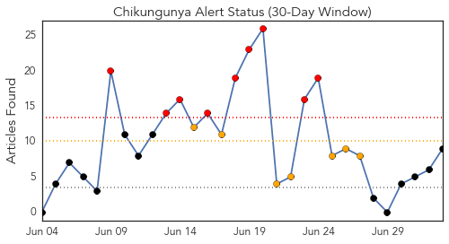
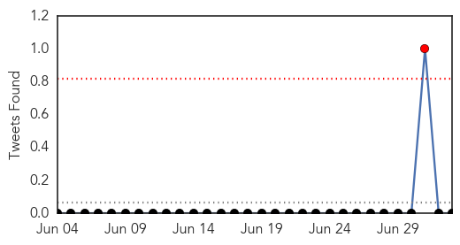
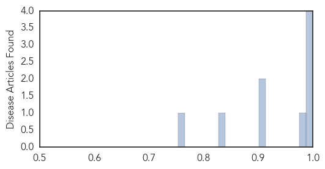
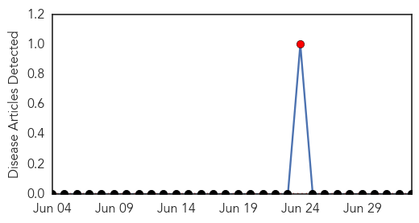
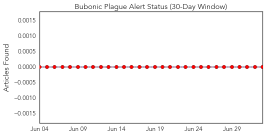
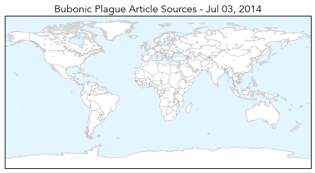
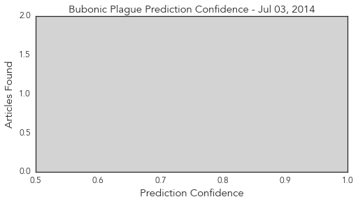

Chikungunya
30-Day Web Trend
9 alerts, 7 warnings

30-Day Twitter Trend
0 alerts, 0 warnings

Article Locations

Article Confidences
Top Articles:
- 1.000
- Mosquitoes carry painful Chikungunya virus to other countries
- 1.000
- Caribbean countries report sharp rise in chikungunya cases
- 0.999
- Chikungunya virus takes a toll in Haiti’s crowded shantytowns; 40,000 suspected cases since May
- 0.995
- Mosquito-borne virus: What you need to know about Chikungunya before you head to the Caribbean
- 0.984
- Mosquito-borne virus in 4 more people, including one in Tuscaloosa
- 0.906
- Chikun-what? A new mosquito-borne virus lands in the US
- 0.905
- Chikun-What? A New Mosquito-Borne Virus Lands In The U.S.
- 0.838
- Chikun-What? A New Mosquito-Borne Virus Lands In The U.S. : Shots
- 0.753
- Guest column: Health departments offer a wide range of services to the public
Top Tweets:
-
No tweets found for Jul 03, 2014
Bubonic Plague
30-Day Web Trend
1 alerts, 0 warnings

30-Day Twitter Trend
0 alerts, 0 warnings

Article Locations
Article Confidences
Top Articles:
-
No articles found for Jul 03, 2014
Top Tweets:
-
No tweets found for Jul 03, 2014